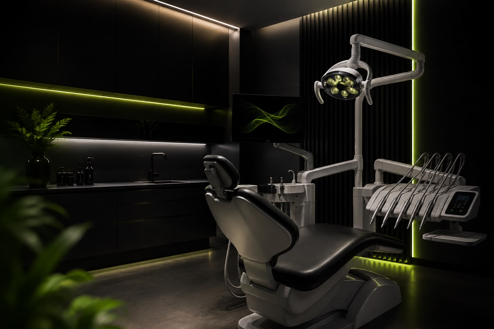
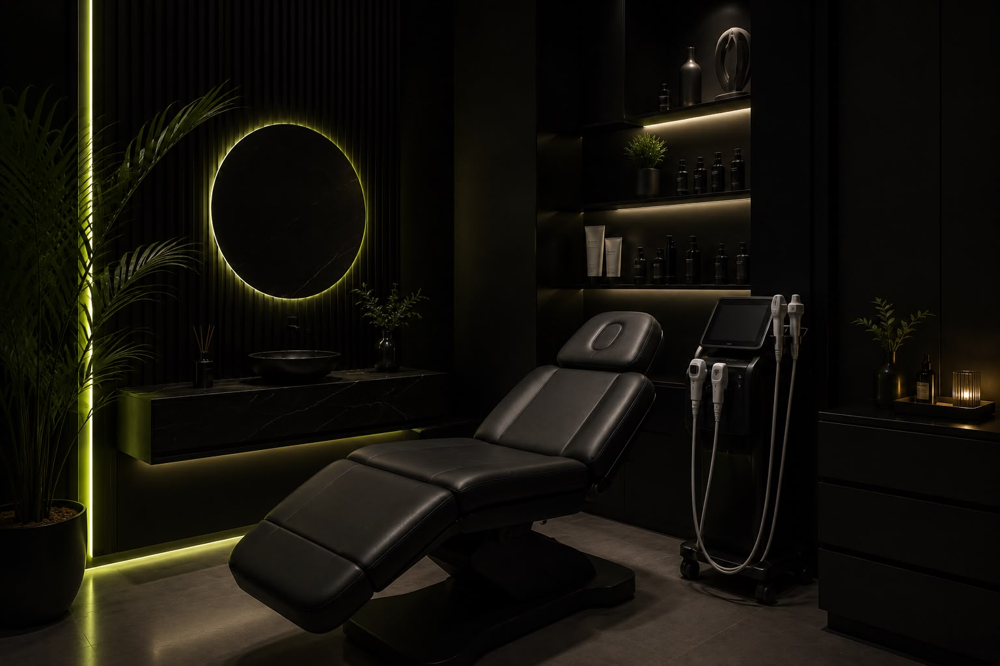
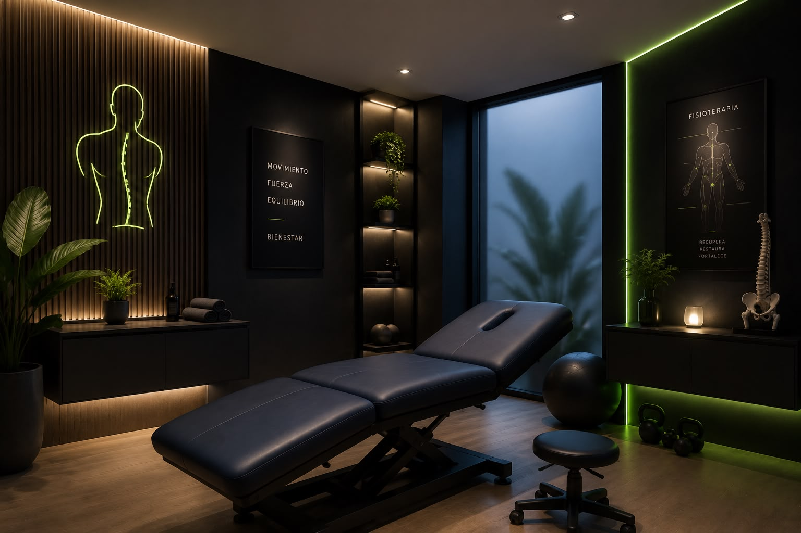
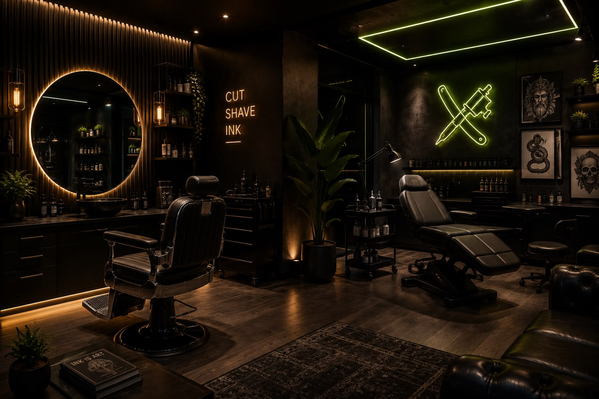
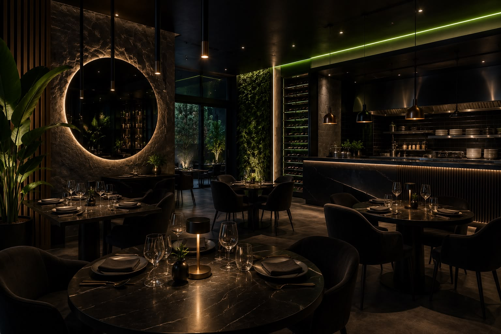
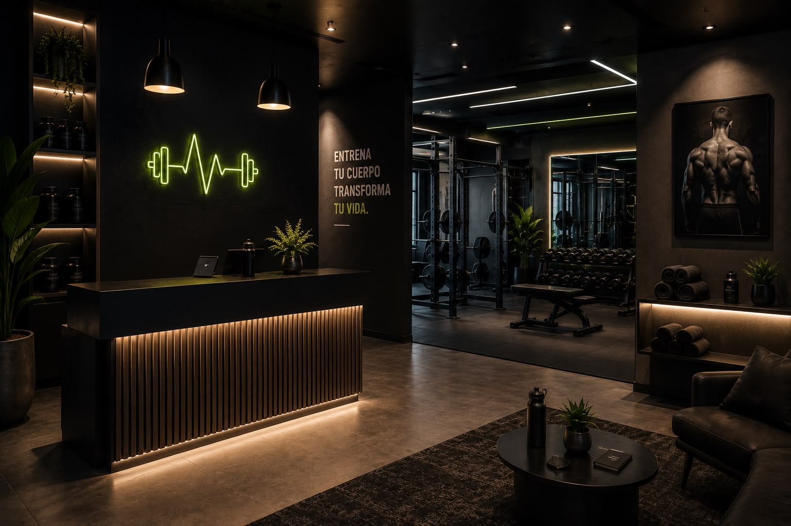

Sectores
Negocios locales que ya captan clientes con NexaFlow.
Mismo sistema, adaptado a cada sector: web premium, SEO local y automatización con IA.

01
Clínicas dentales
Más primeras visitas de implantes y ortodoncia, con agenda llena y sin huecos.

02
Estética y belleza
Reservas online sin fricción para llenar agenda con tratamientos de valor.

03
Fisioterapia y salud
Citas constantes y recordatorios automáticos que reducen las ausencias.

04
Barberías y tatuadores
Reservas online y reseñas automáticas para mantener los sillones ocupados.

05
Hostelería y restauración
Reservas, carta digital y reseñas que llenan mesas y fidelizan clientes.

06
Gimnasios y entrenadores
Captación constante de nuevas altas y clases que se llenan solas.